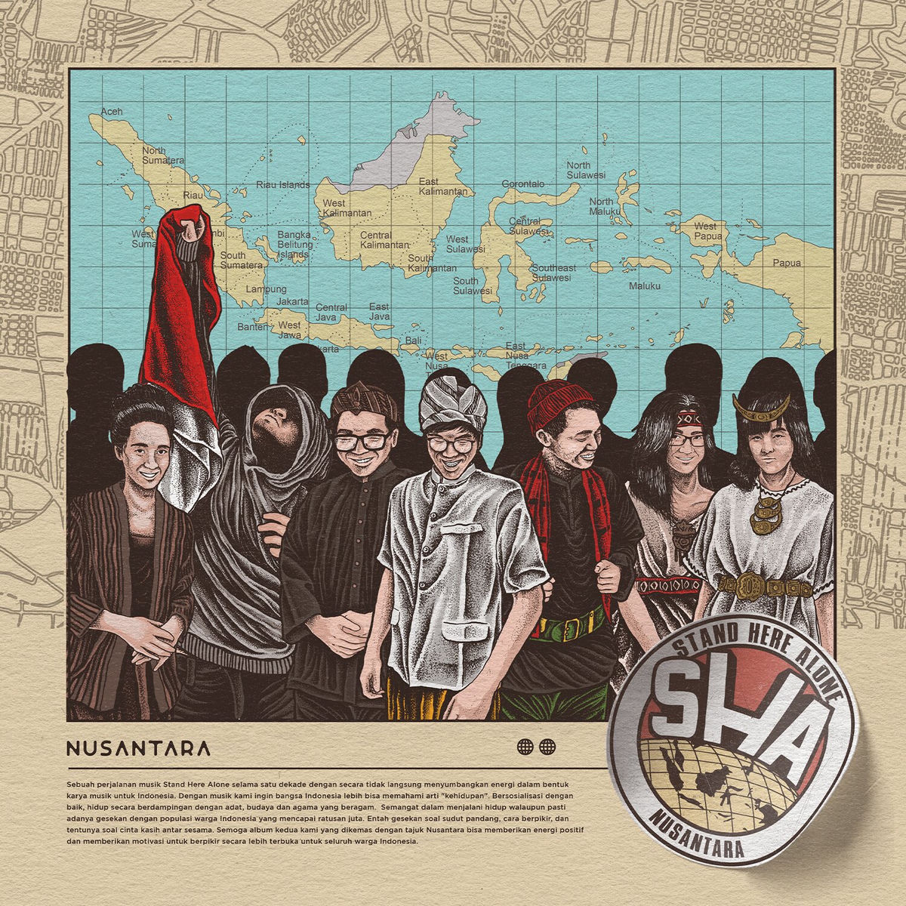

|
Website RapaTake it easy, don't make yourself tired
|
|
| Beranda | Tentang Saya | Sekolahku | Syair Lagu | |
Introvert - STAND HERE ALONE Aku tak mau menjadi seperti ini Kucoba 'tuk beranikan diri Jantung berdetak kencang dan tak terkendali Setelah di rumah, aku pun menyesali Kucoba ini sekali lagi Jantung berdetak kencang dan tak terkendali Sudah ingin berjuang Jantung berdetak kencang dan tak terkendali |
Tautan eksternal |
| © Copyright Rafa M Irawan, 2026. | |